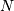
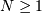

UFunc API¶
Constants¶
- UFUNC_ERR_{HANDLER}
{HANDLER} can be IGNORE, WARN, RAISE, or CALL
- UFUNC_{THING}_{ERR}
{THING} can be MASK, SHIFT, or FPE, and {ERR} can be DIVIDEBYZERO, OVERFLOW, UNDERFLOW, and INVALID.
- PyUFunc_{VALUE}
{VALUE} can be One (1), Zero (0), or None (-1)
Macros¶
- NPY_LOOP_BEGIN_THREADS¶
Used in universal function code to only release the Python GIL if loop->obj is not true (i.e. this is not an OBJECT array loop). Requires use of NPY_BEGIN_THREADS_DEF in variable declaration area.
- NPY_LOOP_END_THREADS¶
Used in universal function code to re-acquire the Python GIL if it was released (because loop->obj was not true).
- UFUNC_CHECK_ERROR(loop)¶
A macro used internally to check for errors and goto fail if found. This macro requires a fail label in the current code block. The loop variable must have at least members (obj, errormask, and errorobj). If loop ->obj is nonzero, then PyErr_Occurred () is called (meaning the GIL must be held). If loop ->obj is zero, then if loop ->errormask is nonzero, PyUFunc_checkfperr is called with arguments loop ->errormask and loop ->errobj. If the result of this check of the IEEE floating point registers is true then the code redirects to the fail label which must be defined.
- UFUNC_CHECK_STATUS(ret)¶
A macro that expands to platform-dependent code. The ret variable can can be any integer. The UFUNC_FPE_{ERR} bits are set in ret according to the status of the corresponding error flags of the floating point processor.
Functions¶
- PyObject* PyUFunc_FromFuncAndData(PyUFuncGenericFunction* func,
- void** data, char* types, int ntypes, int nin, int nout, int identity,
- char* name, char* doc, int check_return)
Create a new broadcasting universal function from required variables. Each ufunc builds around the notion of an element-by-element operation. Each ufunc object contains pointers to 1-d loops implementing the basic functionality for each supported type.
Note
The func, data, types, name, and doc arguments are not copied by PyUFunc_FromFuncAndData. The caller must ensure that the memory used by these arrays is not freed as long as the ufunc object is alive.
Parameters: - func – Must to an array of length ntypes containing PyUFuncGenericFunction items. These items are pointers to functions that actually implement the underlying (element-by-element) function  times.
- data – Should be NULL or a pointer to an array of size ntypes . This array may contain arbitrary extra-data to be passed to the corresponding 1-d loop function in the func array.
- types – Must be of length (nin + nout) * ntypes, and it contains the data-types (built-in only) that the corresponding function in the func array can deal with.
- ntypes – How many different data-type “signatures” the ufunc has implemented.
- nin – The number of inputs to this operation.
- nout – The number of outputs
- name – The name for the ufunc. Specifying a name of ‘add’ or ‘multiply’ enables a special behavior for integer-typed reductions when no dtype is given. If the input type is an integer (or boolean) data type smaller than the size of the int_ data type, it will be internally upcast to the int_ (or uint) data type.
- doc – Allows passing in a documentation string to be stored with the ufunc. The documentation string should not contain the name of the function or the calling signature as that will be dynamically determined from the object and available when accessing the __doc__ attribute of the ufunc.
- check_return – Unused and present for backwards compatibility of the C-API. A corresponding check_return integer does exist in the ufunc structure and it does get set with this value when the ufunc object is created.
- int PyUFunc_RegisterLoopForType(PyUFuncObject* ufunc,
- int usertype, PyUFuncGenericFunction function, int* arg_types, void* data)
This function allows the user to register a 1-d loop with an already- created ufunc to be used whenever the ufunc is called with any of its input arguments as the user-defined data-type. This is needed in order to make ufuncs work with built-in data-types. The data-type must have been previously registered with the numpy system. The loop is passed in as function. This loop can take arbitrary data which should be passed in as data. The data-types the loop requires are passed in as arg_types which must be a pointer to memory at least as large as ufunc->nargs.
- int PyUFunc_RegisterLoopForDescr(PyUFuncObject* ufunc,
- PyArray_Descr* userdtype, PyUFuncGenericFunction function,
- PyArray_Descr** arg_dtypes, void* data)
This function behaves like PyUFunc_RegisterLoopForType above, except that it allows the user to register a 1-d loop using PyArray_Descr objects instead of dtype type num values. This allows a 1-d loop to be registered for structured array data-dtypes and custom data-types instead of scalar data-types.
- int PyUFunc_ReplaceLoopBySignature(PyUFuncObject* ufunc,
- PyUFuncGenericFunction newfunc, int* signature,
- PyUFuncGenericFunction* oldfunc)
Replace a 1-d loop matching the given signature in the already-created ufunc with the new 1-d loop newfunc. Return the old 1-d loop function in oldfunc. Return 0 on success and -1 on failure. This function works only with built-in types (use PyUFunc_RegisterLoopForType for user-defined types). A signature is an array of data-type numbers indicating the inputs followed by the outputs assumed by the 1-d loop.
- int PyUFunc_GenericFunction(PyUFuncObject* self,
- PyObject* args, PyObject* kwds, PyArrayObject** mps)
A generic ufunc call. The ufunc is passed in as self, the arguments to the ufunc as args and kwds. The mps argument is an array of PyArrayObject pointers whose values are discarded and which receive the converted input arguments as well as the ufunc outputs when success is returned. The user is responsible for managing this array and receives a new reference for each array in mps. The total number of arrays in mps is given by self ->nin + self ->nout.
Returns 0 on success, -1 on error.
- int PyUFunc_checkfperr(int errmask, PyObject* errobj)¶
A simple interface to the IEEE error-flag checking support. The errmask argument is a mask of UFUNC_MASK_{ERR} bitmasks indicating which errors to check for (and how to check for them). The errobj must be a Python tuple with two elements: a string containing the name which will be used in any communication of error and either a callable Python object (call-back function) or Py_None. The callable object will only be used if UFUNC_ERR_CALL is set as the desired error checking method. This routine manages the GIL and is safe to call even after releasing the GIL. If an error in the IEEE-compatibile hardware is determined a -1 is returned, otherwise a 0 is returned.
- void PyUFunc_clearfperr()¶
Clear the IEEE error flags.
- void PyUFunc_GetPyValues(char* name, int* bufsize,
- int* errmask, PyObject** errobj)
Get the Python values used for ufunc processing from the thread-local storage area unless the defaults have been set in which case the name lookup is bypassed. The name is placed as a string in the first element of *errobj. The second element is the looked-up function to call on error callback. The value of the looked-up buffer-size to use is passed into bufsize, and the value of the error mask is placed into errmask.
Generic functions¶
At the core of every ufunc is a collection of type-specific functions that defines the basic functionality for each of the supported types. These functions must evaluate the underlying function  times. Extra-data may be passed in that may be used during the calculation. This feature allows some general functions to be used as these basic looping functions. The general function has all the code needed to point variables to the right place and set up a function call. The general function assumes that the actual function to call is passed in as the extra data and calls it with the correct values. All of these functions are suitable for placing directly in the array of functions stored in the functions member of the PyUFuncObject structure.
- void PyUFunc_f_f_As_d_d(char** args, npy_intp* dimensions,
- npy_intp* steps, void* func)
- void PyUFunc_d_d(char** args, npy_intp* dimensions,
- npy_intp* steps, void* func)
- void PyUFunc_f_f(char** args, npy_intp* dimensions,
- npy_intp* steps, void* func)
- void PyUFunc_g_g(char** args, npy_intp* dimensions,
- npy_intp* steps, void* func)
- void PyUFunc_F_F_As_D_D(char** args, npy_intp* dimensions,
- npy_intp* steps, void* func)
- void PyUFunc_F_F(char** args, npy_intp* dimensions,
- npy_intp* steps, void* func)
- void PyUFunc_D_D(char** args, npy_intp* dimensions,
- npy_intp* steps, void* func)
- void PyUFunc_G_G(char** args, npy_intp* dimensions,
- npy_intp* steps, void* func)
- void PyUFunc_e_e(char** args, npy_intp* dimensions,
- npy_intp* steps, void* func)
- void PyUFunc_e_e_As_f_f(char** args, npy_intp* dimensions,
- npy_intp* steps, void* func)
- void PyUFunc_e_e_As_d_d(char** args, npy_intp* dimensions,
- npy_intp* steps, void* func)
Type specific, core 1-d functions for ufuncs where each calculation is obtained by calling a function taking one input argument and returning one output. This function is passed in func. The letters correspond to dtypechar’s of the supported data types ( e - half, f - float, d - double, g - long double, F - cfloat, D - cdouble, G - clongdouble). The argument func must support the same signature. The _As_X_X variants assume ndarray’s of one data type but cast the values to use an underlying function that takes a different data type. Thus, PyUFunc_f_f_As_d_d uses ndarrays of data type NPY_FLOAT but calls out to a C-function that takes double and returns double.
- void PyUFunc_ff_f_As_dd_d(char** args, npy_intp* dimensions,
- npy_intp* steps, void* func)
- void PyUFunc_ff_f(char** args, npy_intp* dimensions,
- npy_intp* steps, void* func)
- void PyUFunc_dd_d(char** args, npy_intp* dimensions,
- npy_intp* steps, void* func)
- void PyUFunc_gg_g(char** args, npy_intp* dimensions,
- npy_intp* steps, void* func)
- void PyUFunc_FF_F_As_DD_D(char** args, npy_intp* dimensions,
- npy_intp* steps, void* func)
- void PyUFunc_DD_D(char** args, npy_intp* dimensions,
- npy_intp* steps, void* func)
- void PyUFunc_FF_F(char** args, npy_intp* dimensions,
- npy_intp* steps, void* func)
- void PyUFunc_GG_G(char** args, npy_intp* dimensions,
- npy_intp* steps, void* func)
- void PyUFunc_ee_e(char** args, npy_intp* dimensions,
- npy_intp* steps, void* func)
- void PyUFunc_ee_e_As_ff_f(char** args, npy_intp* dimensions,
- npy_intp* steps, void* func)
- void PyUFunc_ee_e_As_dd_d(char** args, npy_intp* dimensions,
- npy_intp* steps, void* func)
Type specific, core 1-d functions for ufuncs where each calculation is obtained by calling a function taking two input arguments and returning one output. The underlying function to call is passed in as func. The letters correspond to dtypechar’s of the specific data type supported by the general-purpose function. The argument func must support the corresponding signature. The _As_XX_X variants assume ndarrays of one data type but cast the values at each iteration of the loop to use the underlying function that takes a different data type.
- void PyUFunc_O_O(char** args, npy_intp* dimensions,
- npy_intp* steps, void* func)
- void PyUFunc_OO_O(char** args, npy_intp* dimensions,
- npy_intp* steps, void* func)
One-input, one-output, and two-input, one-output core 1-d functions for the NPY_OBJECT data type. These functions handle reference count issues and return early on error. The actual function to call is func and it must accept calls with the signature (PyObject*) (PyObject*) for PyUFunc_O_O or (PyObject*)(PyObject *, PyObject *) for PyUFunc_OO_O.
- void PyUFunc_O_O_method(char** args, npy_intp* dimensions,
- npy_intp* steps, void* func)
This general purpose 1-d core function assumes that func is a string representing a method of the input object. For each iteration of the loop, the Python obejct is extracted from the array and its func method is called returning the result to the output array.
- void PyUFunc_OO_O_method(char** args, npy_intp* dimensions,
- npy_intp* steps, void* func)
This general purpose 1-d core function assumes that func is a string representing a method of the input object that takes one argument. The first argument in args is the method whose function is called, the second argument in args is the argument passed to the function. The output of the function is stored in the third entry of args.
- void PyUFunc_On_Om(char** args, npy_intp* dimensions,
- npy_intp* steps, void* func)
This is the 1-d core function used by the dynamic ufuncs created by umath.frompyfunc(function, nin, nout). In this case func is a pointer to a PyUFunc_PyFuncData structure which has definition
- PyUFunc_PyFuncData¶
typedef struct { int nin; int nout; PyObject *callable; } PyUFunc_PyFuncData;
At each iteration of the loop, the nin input objects are exctracted from their object arrays and placed into an argument tuple, the Python callable is called with the input arguments, and the nout outputs are placed into their object arrays.
Importing the API¶
- PY_UFUNC_UNIQUE_SYMBOL¶
- NO_IMPORT_UFUNC¶
- void import_ufunc(void)¶
These are the constants and functions for accessing the ufunc C-API from extension modules in precisely the same way as the array C-API can be accessed. The import_ufunc () function must always be called (in the initialization subroutine of the extension module). If your extension module is in one file then that is all that is required. The other two constants are useful if your extension module makes use of multiple files. In that case, define PY_UFUNC_UNIQUE_SYMBOL to something unique to your code and then in source files that do not contain the module initialization function but still need access to the UFUNC API, define PY_UFUNC_UNIQUE_SYMBOL to the same name used previously and also define NO_IMPORT_UFUNC.
The C-API is actually an array of function pointers. This array is created (and pointed to by a global variable) by import_ufunc. The global variable is either statically defined or allowed to be seen by other files depending on the state of Py_UFUNC_UNIQUE_SYMBOL and NO_IMPORT_UFUNC.